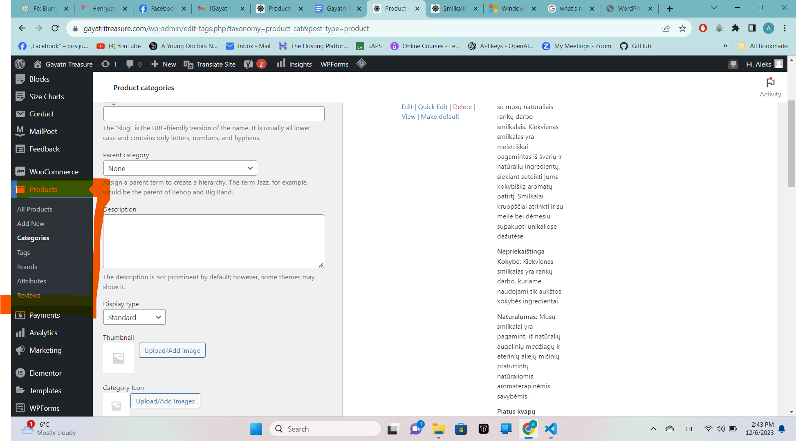

1. Produkai
1. Susirandame skiltį "Products" > "Add New". Suvedame informacija pažymėtuose laukuose.
2. Pavadinimas, pilnas produkto aprašymas.
3. Įkeliame paveiksliukus, priskiriame kategorijai.
4. Prekės kaina.
5. Prekės trumpas aprašymas.
6. Publikuojame prekę.
2. Kategorijos
1. Susirandame skiltį "Products" > "Categories".

2. Pavadinimas, aprašymas, slug (žodis, pagal kurį paieškos mechanizmas atranda prekę paieškoje).
P.S. kuriant sub-kategoriją, ją reikia priskirti prie "tėvinės" kategorijos - "Parent category"
3. Įkeliame "Thumbnail" ir "Category Icon" nuotraukas.
Pridedame kategoriją.
3. Prekių atributai
1. Susirandame skiltį "Products" > "Attributes".
2. Suvedame "Pavadinimą", "Slug", pasirenkame "Swatch", jei norime, kad sąrašas būtų ikonėlėmis, o ne išsiskleidžiančiu sąrašu.
3. Naujai sukurtoje atributų skiltyję pasirenkame "Configure terms".
4. Suvedame pažymėta informaciją, atributo parinktį pridedame prie paties atributo.
4. Atributų pritaikymas prekėms
1. Su "Edit" mygtuku atsidarome produktą, kuriame norime priskirti atributus.
2. Vietoj "Simple product" pasirenkame "Variable product".

3. Skiltyje "Attributes" išsirenkame norimą priskirti atributą.
4. Sugeneruojame visas atributo parinktis.
5. Sugeneruojame visas parinkčių variacijas.
6. Įvedame variacijų kainas ir kitą informaciją, jei to reikia.
7. Išsaugome variacijų informaciją.
Atnaujiname prekę.